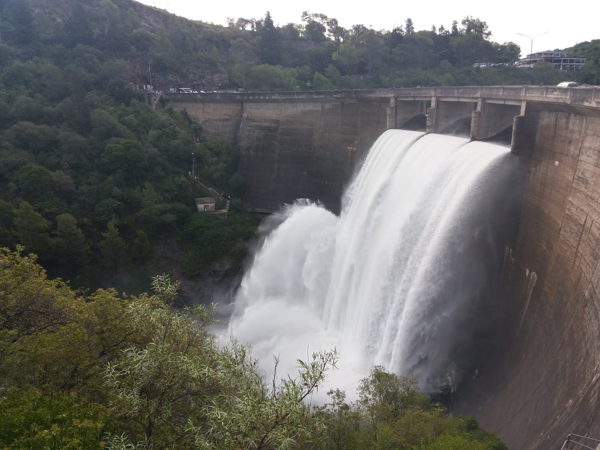
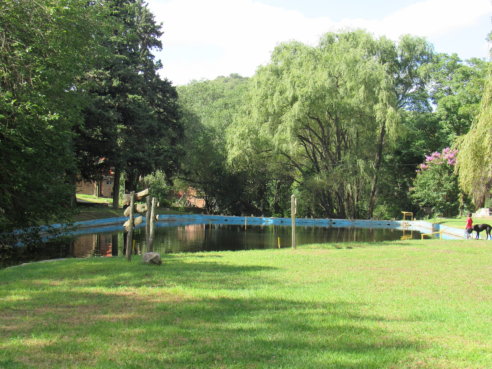

Naturaleza, río, aventura y cultura a minutos de tu estadía en Villa La Serranita
Desde Hostería La Porteña estás en un punto estratégico del Valle de Paravachasca: rodeado de naturaleza, cerca del río, con acceso rápido a diques, senderos y a la ciudad de Alta Gracia.
Acá no solo venís a descansar. Venís a vivir la experiencia.
🌄 Todo cerca, para disfrutar más
Ubicados en Villa La Serranita, tenés múltiples opciones sin hacer grandes traslados: río y balnearios, senderos, actividades de aventura, cultura en Alta Gracia y salidas gastronómicas.
Ideal para escapadas en pareja, con amigos o en familia.
🌊 Agua y río
Río en La Serranita
A pocos minutos de la hostería podés disfrutar del río, descansar, refrescarte en verano o simplemente desconectar en un entorno natural.
Ideal para: plan corto / relax
Duración: 2 a 4 horas
La Rancherita y Las Cascadas
Una de las mejores escapadas cercanas: arroyo, ollas, pequeñas cascadas y senderos.
Ideal para: medio día / naturaleza
Distancia: muy cerca
Dique Los Molinos
Paisajes serranos, deportes acuáticos, pesca y caminatas. Perfecto para pasar el día.
Ideal para: día completo
Distancia: ~20-30 min
🚶 Naturaleza y trekking

Senderos serranos
La zona invita a caminar, explorar y conectar con la naturaleza.
- Caminatas suaves.
- Recorridos entre cerros.
- Contacto directo con el entorno.

Reserva Natural La Rancherita
Un lugar ideal para quienes buscan aire libre, tranquilidad y paisaje.
Mountain Bike
La comuna destaca circuitos para MTB en la zona.
🚣 Aventura y actividades guiadas
Kayak en Dique La Quintana
Experiencia guiada con kayak y trekking. Una de las propuestas más completas de la zona.
Experiencias nocturnas
Opciones como kayak nocturno o actividades con cielo abierto.
Importante:
- No hay transporte público directo.
- Puede haber poca señal.
- Recomendamos planificar o consultarnos antes de salir.
🏛 Cultura e historia
Alta Gracia (a minutos)
Una salida perfecta para combinar cultura y gastronomía.
🍽 Gastronomía y salidas
En la hostería: comidas caseras y platos tradicionales.
En la zona: podés complementar tu estadía con salidas gastronómicas, especialmente en Alta Gracia.
🌌 Experiencias especiales
Escapadas románticas
Naturaleza, tranquilidad, atardeceres serranos y desconexión.
Día completo distinto
Podés combinar río, senderismo, dique y cultura en una misma estadía.
🧭 Elegí tu plan ideal
⏱ Si tenés 2 a 4 horas
- Río en La Serranita.
- Caminata corta.
- Visita a la capilla.
- Paseo por La Rancherita.
🌓 Medio día
- Reserva La Rancherita.
- Parque recreativo.
- Paseos cercanos.
🌞 Día completo
- Dique Los Molinos.
- Dique La Quintana.
- Alta Gracia.
💑 En pareja
- Río + atardecer.
- Paseo tranquilo.
- Cena y descanso.
👨👩👧 Con chicos
- Parque recreativo.
- Río.
- Espacios abiertos.
⭐ Actividades destacadas
- 🌿 La Rancherita: naturaleza, agua y caminatas (ideal para medio día).
- 🚣 Dique La Quintana: kayak + trekking (ideal para aventura).
- 🏛 Alta Gracia: cultura + gastronomía (ideal para paseo relajado).
- 🌊 Río en La Serranita: plan simple y cercano (ideal para descansar).
⚠️ Recomendaciones
Antes de salir:
- Llevar agua y protector solar.
- Consultar clima.
- Planificar traslados.
- Avisar si vas a zonas sin señal.
Durante tu estadía podemos orientarte según el plan que quieras hacer.
🌿 Tu escapada empieza acá: en Hostería La Porteña combinás descanso con experiencias. Reservá tu estadía ahora o escribinos al 0351 156744400.